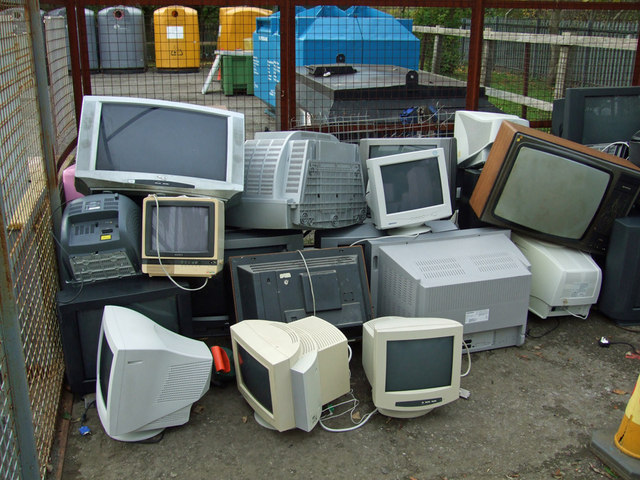
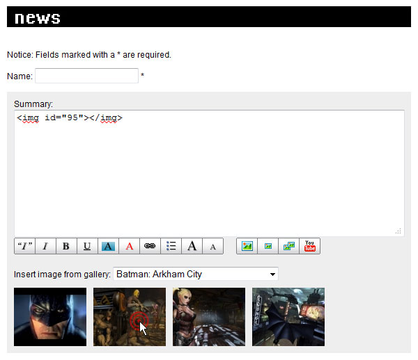
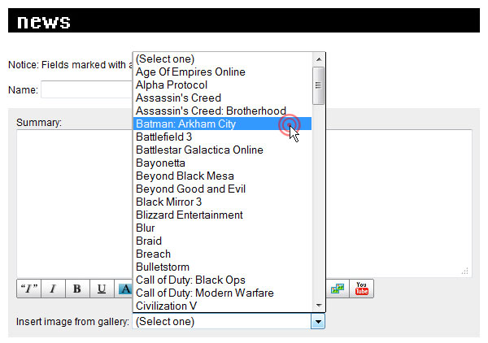
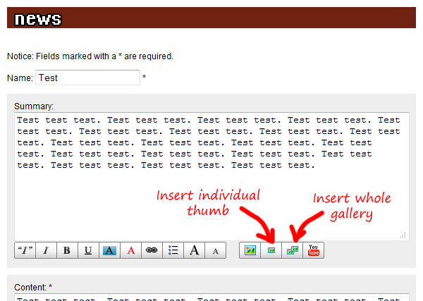
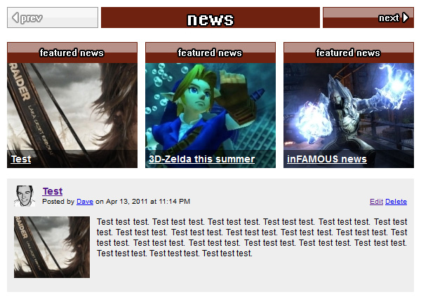
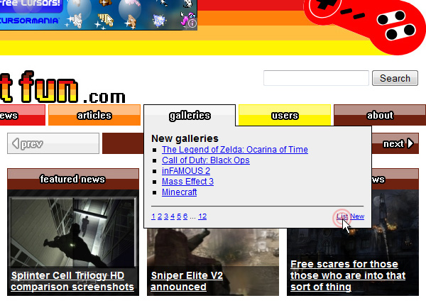
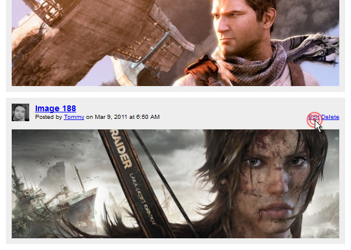
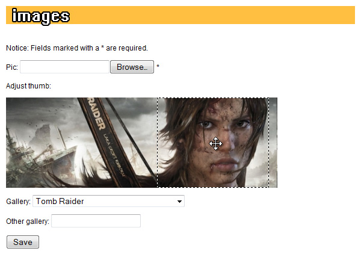
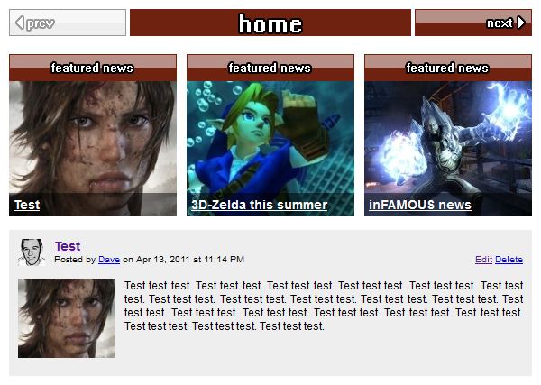

Yesterday's Web
I was cleaning off my desk the other day and found a mysterious, unlabeled hard drive. Plugging it in and examining its contents turned into a trip down memory lane and a bit of an emotional roller coaster: pride at my early ideas and ambitions mixed with embarrassment at my lack of self-awareness.
You won't see any responsive design here -- it wasn't a thing until 2010 -- so these screenshots will look like garbage on a phone. For the optimal viewing experience, use one of these:

Xion Design
My brother and I named our first web design company after the fictional setting of The Matrix, except we spelled it with an X because it's cool:
The blurry hose spigot and random scribbles are my original photography, as are the sunflowers in this redesign:
At least the part about frisbee and pizza is true. Believe it or not, we had clients despite the cringe-inducing copy.
EndGame Clan
All the cool kids wanted to join my Natural Selection team. Did we usually win? Nope! But we had a sweet website and logo. Plus, every member got a custom nametag to use on the forums:
EndGame Creations
I wanted to be a level designer, so naturally I made a website:
The idea was to host all kinds of level-design-related stuff: textures, skies, maps, etc. But my contributors didn't contribute much, and I was more productive in 2D.
EndGame Network
Once I had three distinct but related websites, I had a network. Never mind its contituents were little more than hollow shells:
My big plans to take on GameSpy didn't get much farther than a landing page.
Innovative Renovation Services
This contractor was so impressed with the logo I designed that he hired me to create his website too:
I never cared for the logo. Or the website. But my client was thrilled, and that's what matters.
Egoflux
This is basically my space before MySpace, with just a hint of emo:
I don't know why I thought my inflated ego would comfort anyone, but Jimmy Buffet and Nine Inch Nails on the same playlist is sure to make their skin crawl.
Portfolio 2003
For my first portfolio, I opted for a gray box floating in an empty white void, with light text on a light background, and gray butterflies because, you know, they're so drab. Nothing says "experienced designer" quite like this:
That bear fur rug in the background is more of my original photography. At least I had the presence of mind to redesign it less than a year later:
This is a little better, but it would take years for me to learn how to use contrast.
Photography
When I got my hands on a Canon Rebel SLR with a macro lens, I went nuts. Here's a small selection from that period:
1031 Corporation
The first time I applied for a job at a real software shop, the interviewer was reasonably skeptical at my lack of professional experience. They gave me some text and images and asked me to come up with a proof of concept, which I turned around overnight:
They must have been impressed because they offered me the job on the spot. Unfortunately, I had to decline because the nine-to-five schedule conflicted with my studies. I still remember the look on their face when they realized I was more interested in teaching than programming.
CK Hardwood Floors
I don't remember much about this client. I think they paid me for the design but then had to put it on hold. Too bad, it looks halfway decent:
Mike's Colorado Fishing
My dad was a regular contributor to several local fishing publications, amassing a large enough audience to warrant his own website. This might have been one of the last framesets on the internet:
I'm pretty sure his website received more traffic than all of mine combined. It certainly had more content.
Yonder DeZine/Swell Designs
My brother and I finally changed the name of our company around 2005:
It didn't last long. We changed it again around 2006. I love this logo, but the text could have used a little more polish:
I believe 1999 is a reference to the year I published my first page on GeoCities, which consisted entirely of animated Dragon Ball Z gifs.
TCBY at DIA
This was our biggest client ever, netting hundreds of dollars over the course of several months. No need for random assets here -- they gave us plenty of material to work with:
I'm still proud of this design. It's distinctive, fun, and on brand, right down to the color palette. Could have used more sprinkles though.
Portfolio 2006
This version of my portfolio featured glossy buttons, popup windows, and overlong explanations:
The Kennedy Family
Before Facebook, this seemed like the easiest way to share news and photos of my growing family:
Law Office of Aaron Fethke
This lawyer made the wise choice to go pro with an online business card designed by yours truly:
The copyright says 2015 because that's when I grabbed the screenshot. It was more like '07 or '08 when I made this.
Mica Photography
This photographer knew exactly what she wanted. She provided the design, colors, logo, and other assets, which made my job very easy:
Mr. Kennedy's Classroom
I made this one for my brother after he graduated:
This is one of my favorite projects ever. I love how it looks -- the classroom theme is so natural. I had lots of fun drawing the graphics by hand in Photoshop. And this is the first website I made using PHP and SQL, so I learned a ton.
Chris Steinbach Photography
This photographer's work speaks for itself:
I worked with Chris for years, redesigning his website several times. It was never quite minimalist enough for him.
Portfolio 2010
Thanks to The Non-Designer's Design Book by Robin Williams, I finally learned how to use contrast:
CMSnap
I developed this CMS while working with Chris Steinbach, allowing him to easily and frequently update his gallery. It wasn't pretty to look at, but it was easy to add and edit pages, upload images, and manage users:


Eventually I converted all my clients' websites to use CMSnap, for free, because it was fun.
Retriever Cinema
I got my foot in the door at software shop doing customer support and testing. This company specialized in POS software for movie theaters and restaurants. When they decided to add custom WordPress sites to their services, I jumped at the opportunity to show off. This demo page for an imaginary theater prominently features a non-existent gift card:

Michael's Denver
My friend operated this business for way too long without an online presence, so I offered to help. Unfortunately, this is another design that never made it past the idea stage:

Fun or Not Fun
This was my most ambitious project before landing my first job as a software developer:

It included the best parts of CMSnap and added better tools for managing image galleries and creating thumbnails:

















I had a staff of unpaid writers. We were all hoping it would take off like Destructoid or GameTrailers, but it turns out that takes a lot more work than any of us had time for. Detecting a theme yet?